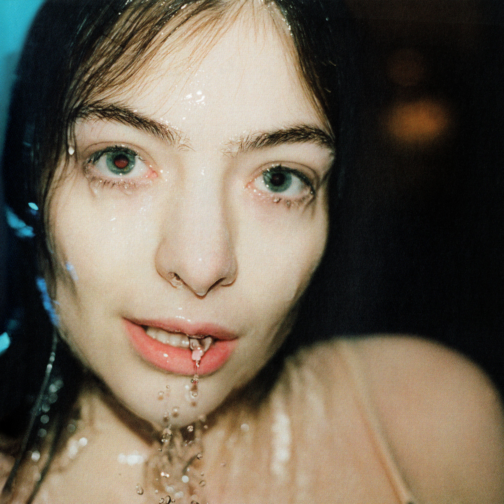

喜欢音乐
音乐似流水，偶尔在平原弯曲而行，偶尔在山涧缓缓流动，偶尔在悬崖飞溅而下。
| 在我看来，听音乐是最能让人放松的一件事情。不管你是开心或者是难过，都可以通过音乐来寻求安慰或者进行发泄。音乐的旋律，往往是人们烦躁抑郁心灵的良药，但是我喜欢音乐，不仅仅是因为它是我心灵的慰问，更是一种对于情感的感知和感动。 |
|  |
当你因为某件事情而伤心难过的时候，你没有心情去做其他的事情，这个时候身边也没有人能够陪伴你，你感觉到孤独和寂寞。那么这个时候，你可以选择听音乐来安抚自己。有时几首歌下来，心里似乎就会平静许多，一些自己难过想不开的事情也会随着音乐而逐渐消散，内心就会恍然大悟。
我有过很多这种情况。有时深夜难过，便插着耳机放几首平时喜欢听的歌，然后就会随着音乐逐渐进入睡眠状态。所以，在我看来，音乐不仅仅是音乐，更是我们的朋友。
有些人喜欢音乐，是音乐的旋律能够表达出他们内心的情感。有时候听到一首歌，我们会因为它动人的旋律而如痴如醉，又或许是因为它的歌词唱出了我们的心声，表达出我们难以表达的情感。
|
|